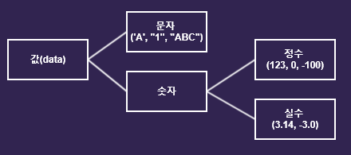

변수의 타입
우리가 주로 사용하는 값(data)의 종류(type)는 크게 문자와 숫자로 나눌 수 있으며, 숫자는 다시 정수와 실수로 나눌 수 있습니다.
값의 분류
기본형과 참조형
타입(data type)은 해당 데이터가 메모리에 어떻게 저장되고, 프로그램에서 어떻게 처리되어야 하는지를 명시적으로 알려주는 역할을 합니다.
자바에서는 여러 형태의 타입을 미리 정의하여 제공하고 있는데, 이것을
기본 타입(primitive type) 이라고 합니다. 기본형 타입은 실제 값(data)을 저장합니다. 자바의 기본 타입은 모두 8종류가 제공되며, 크게는
정수형, 실수형, 문자형 그리고 논리형 타입으로 나눌 수 있습니다.
참조형은 8개의 기본형을 제외한 나머지 타입을 말합니다.
자료형은 크게 기본형과 참조형 두 가지로 나눌 수 있습니다.
기본형(primitive type) 변수는 실제 값(data)을 저장하는 반면에
참조형(reference type) 변수는 어떤 값이 저장되어 있는 주소(memory address)를 값으로 갖습니다.
기본형(primitive type)의 종류
|
논리형 boolean(1 byte)
true와 false 중 하나의 값으로 갖으며, 조건식과 논리적 계산에 사용됩니다. |
|
문자형 char(2 byte)
문자를 저장하는데 사용되며, 변수에 하나의 문자만을 저장할 수 있습니다. 값을 저장 하는 경우 작은 따옴표(')를 사용합니다. |
|
정수형 byte(1 byte), short(2 byte), int(4 byte), long(8 byte)
정수를 저장하는데 사용되며, 주로 int가 사용됩니다. byte는 이진 데이터를 다룰 때 사용되며, short은 C언어와의 호환을 위해서 추가된 자료형입니다. |
|
실수형 float(4 byte), double(8 byte)
실수를 저장하는데 사용되며, 주로 double이 사용됩니다. |
문자형인 char는 문자를 내부적으로 정수(유니코드)로 저장하기 때문에 정수형과 별반 다르지 않으며, 정수형 또는 실수형과 연산도 가능합니다. 반면 boolean은 다른 기본형과의 연산이 불가능 하며, 참(true)과 거짓(false) 값만을 가집니다. 정수는 가장 많이 사용되며 타입을 4가지 제공하고 있습니다. 각 타입마다 저장할 수 있는 값의 범위가 다르므로 저장할 값의 범위에 맞는 타입을 선택하여 사용해야 하지만 일반적으로 int를 가장 많이 사용되고 있습니다.
- * int는 CPU가 가장 효율적으로 처리 할 수 있는 타입이지만 효율적인 실행보다 메모리를 절약하려면 byte와 short를 선택합니다.
상수와 리터럴(constant & literal)
상수(constant)란
변수와 마찬가지로 데이터를 저장할 수 있는 메모리 공간을 의미합니다. 하지만 상수가 변수와 다른 점은 프로그램이 실행되는 동안 한 번 메모리에 저장된 값은 다른 값으로
데이터를 변경할 수 없다는 점입니다.
자바에서는 상수를
final키워드를 사용하여 선언하며 변수와 마찬가지로 이름을 가지고 있는 메모리 공간으로, 이러한
상수는 선언과 동시에 반드시 초기화해야 합니다.
Syntax
final int MAX_SPEED; // 에러. 상수는 선언과 동시에 초기화 선언해야 합니다.
final int MAX_SPEED = 10; // OK
MAX_SPEED = 20; // 에러. 상수의 값은 변경될 수 없습니다.
상수(constant)의 명명규칙 : 상수의 이름은 모두 대문자로 하는 것이 암묵적인 규칙이며, 여러 단어로 이루어져있는 경우 (_)로 구분하여 연결합니다.
Error
: 상수(constant) final로 선언된 상수는
JDK 1.6부터 상수를 선언과 동시에 초기화 하지 않아도 사용하기 전에만 초기화 하면 되도록 변경되었으나 멤버변수이라도 초기화 값을 선언해주는 것이 좋습니다. 또한 값을 변경 할 수 없습니다.
리터럴(literal)이란
그 자체로 값을 의미하는 것입니다. 즉, 변수와 상수와는 달리 데이터가 저장된 메모리 공간을 가리키는 이름을 가지고 있지 않습니다. 변수에 타입이 있는 것과 같이 리터럴에도 타입이 있습니다.
리터럴 뒤에 추가되어 해당 리터럴의 타입을 명시해주는 접미사를 리터럴 타입 접미사(literal type suffix) 라고 합니다. 자바에서 사용할 수 있는 리터럴 타입과 리터럴 타입 접미사는
다음과 같습니다.
리터럴 타입(literal type) & 리터럴 타입 접미사(literal type suffix)
| 리터럴 타입 | 리터럴 | 접미사 | |
|---|---|---|---|
|
정수형 리터럴
(Integer literals) |
123, -456과 같이 아라비아 숫자와 부호로 직접 표현됩니다. | 123, 0b0101, 077, 0xFF, 100L | L |
| 실수형 리터럴
(floating-point literals) |
3.14, -45.6과 같이 소수 부분을 가지는 아라비아 숫자로 표현됩니다. | 3.14, 3.0e8, 1.4f, 0x1.0p-1 | f,d |
| 논리형 리터럴
(boolean literals) |
true나 false로 표현됩니다. | false, true | 없음 |
| 문자형 리터럴
(character literals) |
'a', 'Z'와 같이 작은따옴표('')로 감싸진 문자로 표현됩니다. | 'A', '1', '\n' | 없음 |
| 문자열 리터럴
(string literals) |
"자바", "홍길동"과 같이 큰따옴표("")로 감싸진 문자열로 표현됩니다. | "ABC", "123", "true", "A" | 없음 |
| null 리터럴
(null literals) |
단 하나의 값인 null로 표현됩니다. | null | 없음 |
- * 널(null) : 널(null)이란 아무런 값도 가지고 있지 않은 빈 값을 의미합니다.
int age = 35; // 35 라는 값이 리터럴입니다.
final int MAX_SPEED = 10; // 10 이라는 값이 리터럴입니다.